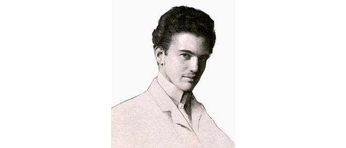
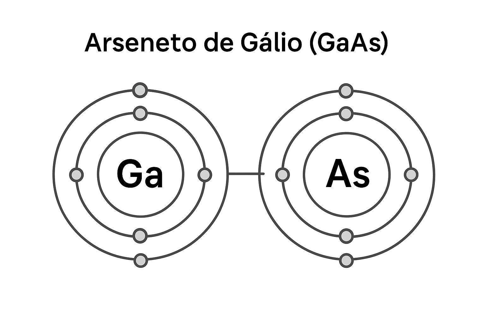
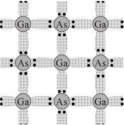
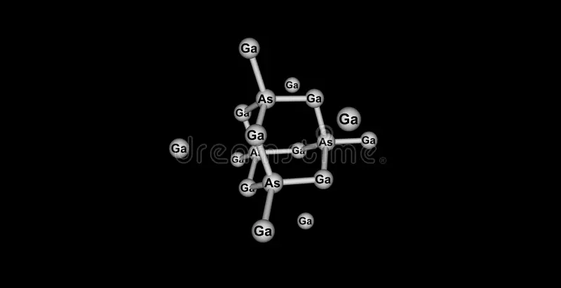

O arsenieto de gálio foi sintetizado e estudado pela primeira vez por Victor Goldschmidt em 1926,passando vapores de arsênio misturados com hidrogênio sobre óxido de gálio (III) a 600 °C.
As propriedades semicondutoras do GaAs e outros compostos III-V foram patenteadas por Heinrich Welker na Siemens-Schuckert em 1951 e descritas em uma publicação de 1952. A produção comercial de seus monocristai começou em 1954, e mais estudos se seguiram na década de 1950. Os primeiros LEDs infravermelhos foram feitos em 1962.
Questionário Interativo
No modelo atômico de Bohr, o Arseneto de Gálio é formado por: (1/3)
✅ Correto! O GaAs é um composto semicondutor. Cada átomo de gálio compartilha elétrons com um átomo de arsênio, formando ligações covalentes. Esses pares de átomos se repetem em um padrão regular, formando uma rede cristalina tridimensional, e não um arranjo de íons como nos sais iônicos (por exemplo, NaCl).

O tipo de ligação química predominante no GaAs é: (2/3)
✅ Parabéns! No GaAs, os elétrons são compartilhados entre o gálio e o arsênio, criando ligações covalentes fortes. Isso é característico de semicondutores, que possuem estrutura semelhante ao diamante. Se fosse ligação iônica, haveria transferência completa de elétrons, formando íons, o que não acontece aqui.

A geometria da estrutura cristalina do Arseneto de Gálio é: (3/3)
✅ Obrigado por realizar o questionário! O GaAs cristaliza em uma estrutura chamada “blenda de zinco”, que é basicamente uma rede cúbica de face centrada, igual à do diamante, mas alternando átomos de gálio e arsênio. Essa geometria é o que dá ao GaAs suas propriedades semicondutoras especiais.
